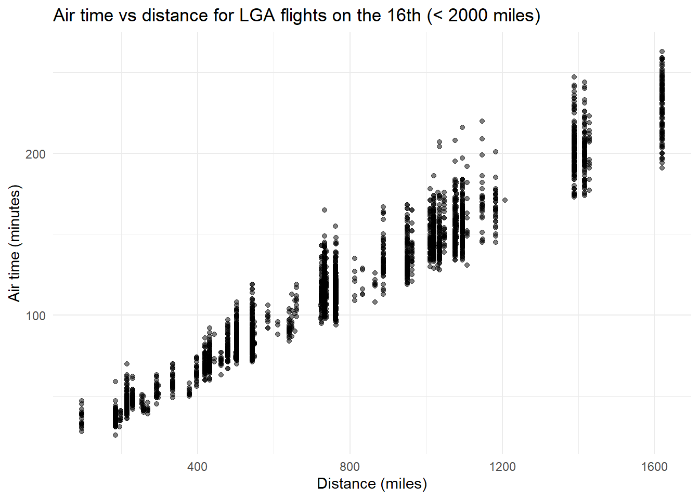
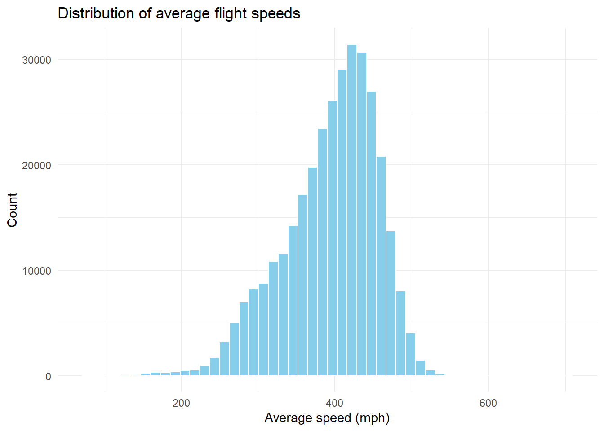

Please read the entire chapter on data transformation from R for Data Science before starting this homework.
This homework relies on the nycflights13 package, which contains several data frames, including:
airlines
airports
flights
planes
weather
Loading nycflights13 puts these data frames on the search path.
Setup
Load packages (do this every time)
library(tidyverse)
── Attaching core tidyverse packages ──────────────────────── tidyverse 2.0.0 ──
✔ dplyr 1.1.4 ✔ readr 2.1.6
✔ forcats 1.0.1 ✔ stringr 1.6.0
✔ ggplot2 4.0.1 ✔ tibble 3.3.1
✔ lubridate 1.9.4 ✔ tidyr 1.3.2
✔ purrr 1.2.1
── Conflicts ────────────────────────────────────────── tidyverse_conflicts() ──
✖ dplyr::filter() masks stats::filter()
✖ dplyr::lag() masks stats::lag()
ℹ Use the conflicted package (<http://conflicted.r-lib.org/>) to force all conflicts to become errors
library(nycflights13)
Note - if you don’t have these installed you will need to first install.packages(‘nycflights13’)
Question 1: Filtering
Make a plot of air time vs distance (air time on the y-axis, distance on the x-axis) for all flights that meet the following criteria:
originate from LaGuardia airport ("LGA")
departed on the 16th of the month
have a flight distance of less than 2000 miles
Your code
flights_lga_16_lt2000 <- flights |>filter( origin =="LGA", day ==16, distance <2000,!is.na(air_time) )flights_lga_16_lt2000 |>ggplot(aes(x = distance, y = air_time)) +geom_point(alpha =0.5) +labs(x ="Distance (miles)",y ="Air time (minutes)",title ="Air time vs distance for LGA flights on the 16th (< 2000 miles)" ) +theme_minimal()

Brief written response
In 2–4 sentences, describe what you observe in the plot. (For example: Is the relationship roughly linear? Are there any clear outliers?)
Your answer here: The plot is a scatterplot with distance (miles) on the x-axis from 0 to 2000, and air time (minutes) on the y-axis from roughly 0 to 400. Points form a clear positive linear trend longer flights take more air time with tighter clustering at shorter distances and wider spread at longer ones
Question 2: Dealing with NAs
Make a data frame of all rows of flights that have values for botharr_time and dep_time (i.e., neither value is NA).
Your code
# Create a new data frame that removes rows where arr_time or dep_time is NA.library(nycflights13)library(dplyr)flights_complete_times <- flights |>filter(!is.na(arr_time), !is.na(dep_time))
Filtering NAs (conceptual)
ggplot() will automatically remove NA valuesfrom a plot, but it emits a warning message about it. You could silence warnings using chunk options, but instead:
Brief written response
Explain (in words) how you could prevent those NA values from appearing in the plot in the first place.
Your answer here: Filter out rows with missing values for the plotted variables using filter() before passing the data to ggplot(). In R for Data Science terms, pipe your data through filter(!is.na(air_time)) during the transformation pipeline, then visualize.
Question 3: Adding columns
Create a data frame of average flight speeds, based on air_time and distance.
Then make either:
a histogram, or
a density plot
If you like, you may break the data out (e.g., by airline or another variable) in a way that you think makes sense.
Your code
# Create a new column for average speed.# (Hint: think carefully about units — air_time is in minutes.)# Then make a histogram or density plot.library(nycflights13)library(dplyr)library(ggplot2)flights_speed <- flights |>filter(!is.na(air_time), air_time >0) |>mutate(speed_mph = distance / (air_time /60) )ggplot(flights_speed, aes(x = speed_mph)) +geom_histogram(bins =50, fill ="skyblue", color ="white") +labs(x ="Average speed (mph)",y ="Count",title ="Distribution of average flight speeds" ) +theme_minimal()

Brief written response
Describe the main features of your speed distribution.
Your answer here: The speed distribution is right-skewed, with most flights around 400-500 mph (typical jet cruise speeds). A long right tail shows a few slower flights (down to ~100 mph), while the fastest are near 650 mph. Few flights exceed 600 mph
Rendering and submission (GitHub)
Canvas contains the course GitHub link and instructions for forking the course repository.
In this file, your job is to:
Complete the homework by adding code + written responses above.
Render this Quarto file to HTML or PDF.
Move the rendered file(s) to the /doc folder (note that, if you render to html you will also have to move your hmk_04_data_frames_files folder)
Add/commit both:
this edited .qmd filegit clone
the rendered output file(s) (HTML or PDF)
Push your changes to your fork on GitHub.
Open a Pull Request back to the course repository.
What to submit on Canvas
On Canvas, submit a link to your GitHub fork repository (not files).